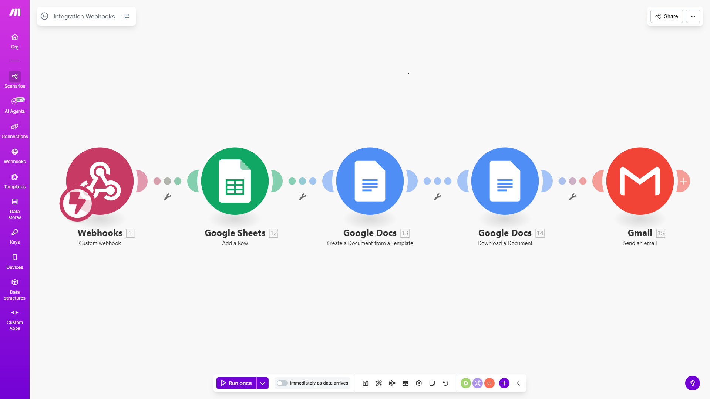
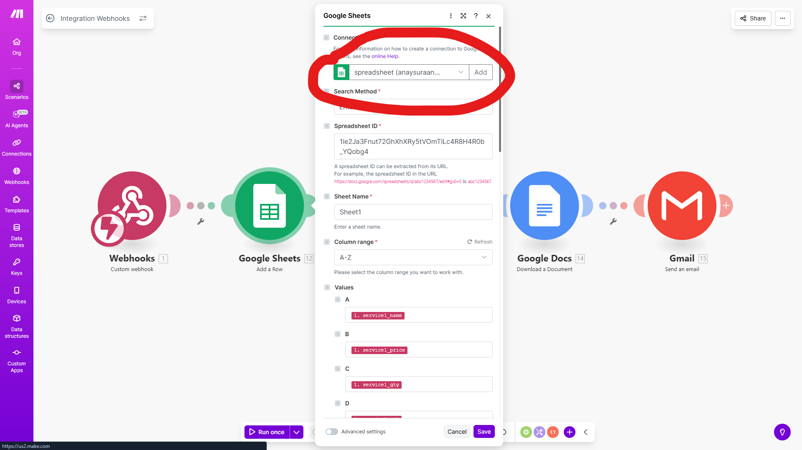
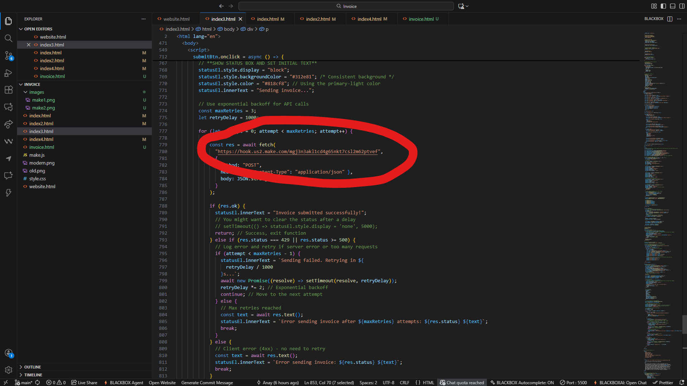
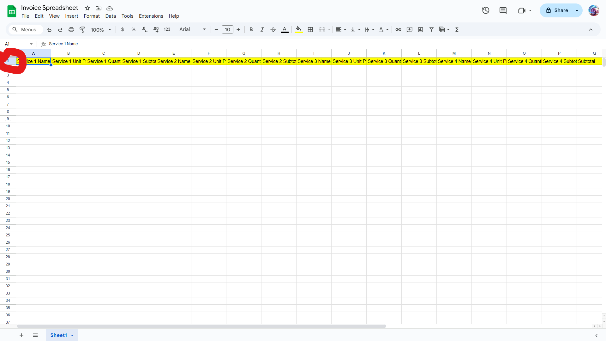
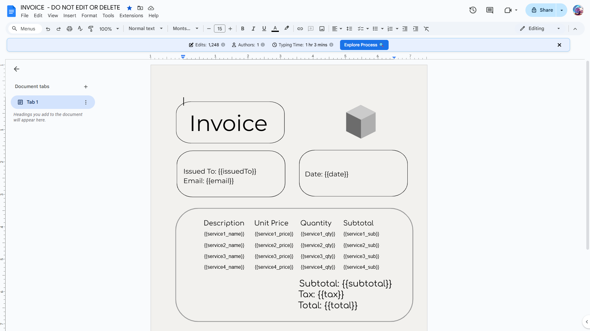

Export the Scenario
First, I go into my own make.com account and export the full scenario that I built. After exporting it, I email you the scenario file along with my website code so you can import it into your account. This gives you the complete automation setup exactly how it runs for me.

Import and Reconnect
Once I send you the exported scenario, you open your make.com account and import the file. Importing will recreate the entire workflow structure on your side, but you will reconnect the modules with your own Google, email, and other services so everything runs under your account instead of mine.

Create New Webhook
After the scenario is imported, you create a brand-new webhook inside your Make.com account. This gives you a unique webhook URL. You then open my website code and replace the old webhook address with your new one so my site will send invoice data directly to your scenario.

Set Up Spreadsheet
Next, you create a new Google Spreadsheet in your Google account. In the first column, you type all the values that will appear in the invoice—these must match exactly what my website sends (name, service, price, date, total, etc.). Every time someone fills out the form on my site, these values will get logged into the sheet through your scenario.

Create Invoice Template
Then, you create a Google Doc that will serve as the invoice template. Inside the document, you type all the same field names from the spreadsheet, but with double brackets like this: {{customer_name}}, {{service}}, {{price}}, {{total}}. The spelling must match the spreadsheet exactly. Make.com will automatically replace those brackets with real data.

Configure PDF and Email
Finally, you configure the Google Docs → PDF module so it downloads the generated invoice as a PDF. You connect it with the same Google account used for the first document. Then you update the email module so it sends the PDF to your business email and to the customer. This ensures both you and the client receive a copy of every invoice automatically.